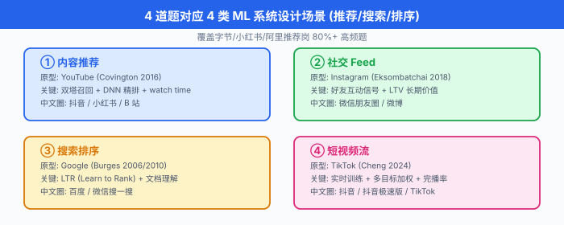
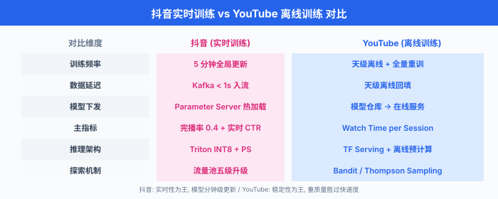
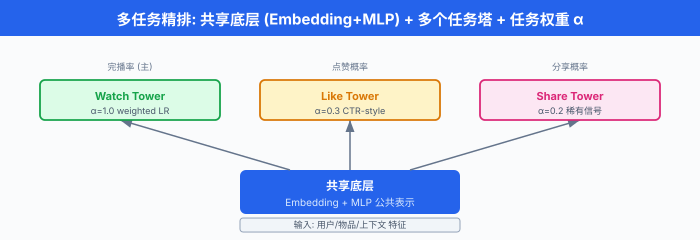
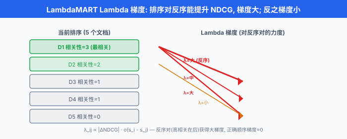
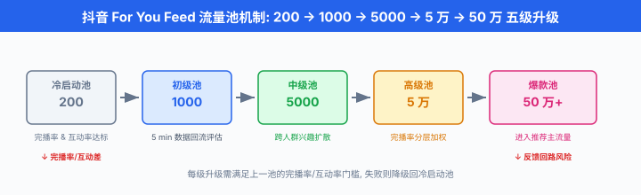

典型题深度演练 · 推荐/搜索/排序¶
一句话总结：把 02 节的 8 步框架拆成 4 道完整 mock——YouTube 推荐 / Instagram Feed / Google 搜索 / TikTok/抖音推荐，每道 45 分钟时间盒 + 白板图 + 数学公式 + 追问 cheat sheet + 中文圈实战陷阱。
02 节讲的是脚手架——8 步怎么走。 这一节是把脚手架搭在 4 个真实产品上，让你在屏幕共享的白板上一笔一笔地演练。 YouTube 推荐是西方大厂的"原型题", Instagram 是社交信号的代表，Google 搜索把 8 步切成"召回/精排/重排"三段，TikTok/抖音是中圈中文面试的"决胜题"——把这 4 道打透，Facebook/字节/阿里/快手的 ML 系统设计题就稳了.
0. 全章概览：4 道题的认知地图¶
面试真题看似很多，拆开看只有 4 类:
| 类型 | 原型 | 关键差异化 | 中文圈变体 |
|---|---|---|---|
| 内容推荐 | YouTube (Covington 2016) | 双塔召回 + DNN 精排 + watch time | 抖音 / 小红书 / B 站 |
| 社交 Feed | Instagram (Eksombatchai 2018) | 好友互动信号 + LTV 长期价值 | 微信朋友圈 / 微博 |
| 搜索排序 | Google (Burges 2006/2010) | LTR (Learning to Rank，学习排序) + 文档理解 | 百度 / 微信搜一搜 |
| 短视频流 | TikTok (Cheng 2024) | 实时训练 + 多目标加权 + 完播率 | 抖音 / 抖音极速版 / TikTok |
这 4 道题共占字节/小红书/阿里推荐岗面试的 80%+ 高频题。 下面一道一道演练。


题 1: YouTube 首页视频推荐 (西方原型题)¶
1.1 题目陈述¶
"设计 YouTube 首页视频推荐系统. 你是 PM / 架构师 / MLE 综合身份，45 分钟把核心组件讲清楚."
这是 YouTube 2016 论文 (Covington et al.) 的原型题，也是 Facebook ML 系统设计的高频题型. 据说 80% 的西方大厂 ML 系统设计题都是推荐, YouTube 是推荐里最经典的。
1.2 45 分钟时间盒¶
| 时间 | Step | 必答内容 | 关键产出 |
|---|---|---|---|
| 0:00-0:05 | Clarify | 用户状态 / 候选池 / 数量 / 冷启动 / 指标偏好 / 基线 | 需求清单 |
| 0:05-0:10 | Metrics | 离线 MAP vs AUC；在线 watch time；护栏多样性；长期留存 | 三层指标表 |
| 0:10-0:15 | Data | impression + watch log; weighted LR 转 watch time | 数据流图 |
| 0:15-0:20 | Features | 用户长短期 + 物品 embedding + 上下文；特征仓库 | 特征分类 |
| 0:20-0:28 | Model | 双塔召回 + DNN 精排 + 多任务 + 重排 (本节重点) | 完整架构图 |
| 0:28-0:33 | Training | 类别不平衡 + 负采样分层 + 分布式 | 训练方案 |
| 0:33-0:40 | Deployment | 离线召回 + 在线推理混合；灰度 A/B | 服务架构 |
| 0:40-0:45 | Monitor | PSI / 长尾创作者 / 反馈回路 | 监控指标 |
| 0:45-0:50 | 反问 | "您最关心的是 watch time 还是多样性?" | 留 5 分钟追问 |
下面把 0:00-0:28 的内容详细展开——这是候选人翻车最多的 28 分钟。
1.3 Step 1 — Clarify (0:00-0:05)¶
满分话术 (向面试官确认):
"给谁推：登录用户 (有完整行为历史) vs 未登录 (只有 IP / 地域). 两种走不同模型。
场景：首页推荐 (候选池大，给用户多类选择) vs 看完视频后的'下一个' (强相关性，候选池更聚焦).
数量：每屏 5 个，总滚动 10 屏。 关注滚到底的用户 (他们代表了真正活跃群体).
冷启动：新用户没有行为，走热门 + 人口属性 + Bandit；新视频没有统计，走内容 embedding + 类目相似。
业务指标: watch time per session > CTR，因为 YouTube 的商业模式是广告 + 总观看时长，不是点击。
基线：当前是热门 Top-N，我必须证明 ML > Top-N 才有意义."
❌ 常见卡顿点："我推荐电影"——没说清是给登录用户推还是给新用户推，没说候选池多大。 ✅ 解套：强行套 6 个 5W1H 问题，即使面试官说"你自己假设"，你也要嘴上说出来——这 5 分钟的功劳，是把模糊题变成可解数学题。
1.4 Step 2-4 — 指标 + 数据 + 特征 (0:05-0:20)¶
1.4.1 Metrics¶
# YouTube 三层指标 (5 min)
metrics = {
"offline": {
"primary": "MAP (Mean Average Precision)", # 比 AUC 更贴排序质量
"secondary": "Recall@K / Hit Rate@100", # 召回覆盖
"calibration": "Brier Score for watch time",
},
"online": {
"primary": "watch time per session", # 金标准, Covington 2016 公开承认
"guardrail": ["页面加载 ≤ 200ms", "崩溃率不增长", "创作者多样性"],
},
"long_term": {
"retention": "7-day / 30-day return rate",
"creator_health": "上传视频数 + 长尾创作者曝光占比",
},
}
灵魂拷问: "为什么不用 CTR?"
✅ 答：CTR 高的视频往往是骗点击的标题党——用户点进去就退。 YouTube 关心的是用户是否真的看完了. 你可以用 weighted logistic regression (加权逻辑回归) 把连续 watch time 转成加权二分类，权重 = watch time，这样一个模型既保持二分类的稳定训练，又反映了 watch time 的偏好——这是 Covington 2016 的核心 trick.
1.4.2 Data¶
data_pipeline = {
"impression_log": "曝光日志 (用户看到哪些视频), 含负样本",
"watch_log": "观看日志 (看完 / 跳过 / 时长 / 完播率)",
"item_metadata": "视频标题 / 标签 / 时长 / 创作者 / 上传时间",
"user_profile": "人口属性 + 长期偏好 + 短期 session",
}
# 标签: watch time 作为软标签, weighted LR 转二分类
label = (watch_time > threshold).float() * watch_time
# 负采样: 用户看过但没看完 + 随机未曝光, 比例 1:5
1.4.3 Features¶
- 用户特征：人口属性 (天级，离线批) + 长期偏好 (小时级，Spark 聚合) + 短期 session (秒级，Flink)
- 物品特征：视频 embedding (预训练多模态) + 创作者统计 (CTR / watch time / 7 天上传频次)
- 上下文：时间 / 设备 / 网络 / 位置
- 特征仓库: Feast 统一，离线训练和在线推理共用同一份特征定义
详细工程在 02 节已经讲透——本节只列出与 YouTube 强相关的项。
1.5 Step 5 — Model (0:20-0:28) ★ 本节核心¶
这是 YouTube 推荐的真正难点：三段式架构。 下面用白板图 + 数学公式 + 代码三件套讲透。
1.5.1 整体架构白板图¶
┌────────────────────────────────────────────────────────┐
│ YouTube 首页推荐 整体架构 │
│ │
User │ 召回 (Candidate Gen) 粗排 (Shortlist) 精排 (Ranking) │
Request │ 1000 万 → 1000 1000 → 100 100 → 10 │
│ │ ────────────────── ────────────── ────────── │
│ │ ┌─────────────┐ ┌──────────┐ ┌─────────┐│
▼ │ │ 双塔 (Two- │ │ 浅层 │ │ DNN ││
Features │ │ Tower, ANN) │ │ MLP │ │ Multi- ││
│ │ │ │ │ │ │ task ││
│ │ └─────────────┘ └──────────┘ └─────────┘│
│ │ │ │ │ │
│ │ ▼ ▼ ▼ │
│ │ 协同过滤 简单 LR 多任务 │
│ │ + 热门兜底 + 规则 + 交叉 │
│ │ ▼ │
│ │ ┌──────────┐│
└────────► │ 重排 ││
│ │ MMR 多样 ││
│ │ 创作者去重││
│ │ Bandit ││
│ └──────────┘│
└────────────────────────────────────────────────────────┘
1.5.2 召回：双塔 (Two-Tower) 模型¶
双塔模型 是 YouTube 召回的工业标准。 核心思路：把用户和物品分别编码成同维度向量，用内积算相似度。 训练时同时跑两侧 DNN，推理时物品向量离线算好存向量数据库，在线只算用户向量，拿去做 ANN (近似最近邻) 检索。
数学公式：用户塔输出 \(\mathbf{u}\)，物品塔输出 \(\mathbf{v}\)，相似度评分
训练目标是矩阵 softmax (in-batch softmax，又称 sampled softmax):
其中 \(B\) 是一个 mini-batch，同 batch 内其它物品当负样本。 实际工程上还会加 hard negative (模型分高但用户没点的物品).
代码实现 (PyTorch 双塔召回):
# YouTube 召回: 双塔模型 (PyTorch)
import torch
import torch.nn as nn
class YouTubeTwoTower(nn.Module):
"""YouTube 双塔召回: 用户塔 + 物品塔, ANN 检索."""
def __init__(self, user_dim, item_dim, embed_dim=128):
super().__init__()
# 用户塔: 看过的视频 embedding mean + 人口 + session
self.user_tower = nn.Sequential(
nn.Linear(user_dim, 512), nn.ReLU(), nn.Dropout(0.2),
nn.Linear(512, 256), nn.ReLU(),
nn.Linear(256, embed_dim), # 128 维 embedding
)
# 物品塔: 视频 embedding (多模态) + 类目 + 创作者统计
self.item_tower = nn.Sequential(
nn.Linear(item_dim, 512), nn.ReLU(), nn.Dropout(0.2),
nn.Linear(512, 256), nn.ReLU(),
nn.Linear(256, embed_dim),
)
def encode_user(self, user_feat):
return self.user_tower(user_feat) # (B, 128)
def encode_item(self, item_feat):
return self.item_tower(item_feat) # (B, 128)
def forward(self, user_feat, item_feat):
u = self.encode_user(user_feat) # (B, 128)
v = self.encode_item(item_feat) # (B, 128)
# 内积相似度
logits = u @ v.T # (B, B) 全配对
return logits
# 在线召回: 算用户向量, 然后 ANN 检索
def get_user_embedding(self, user_feat):
with torch.no_grad():
return self.encode_user(user_feat).numpy() # (1, 128)
# 用 in-batch softmax 训练
model = YouTubeTwoTower(user_dim=256, item_dim=192).cuda()
optimizer = torch.optim.Adam(model.parameters(), lr=1e-3)
criterion = nn.CrossEntropyLoss() # 实际等价于 sampled softmax
for epoch in range(20):
for user_feat, item_feat, label in dataloader:
logits = model(user_feat.cuda(), item_feat.cuda()) # (B, B)
loss = criterion(logits, label.cuda()) # label 是 item id
optimizer.zero_grad(); loss.backward(); optimizer.step()
# 推理: 算 item embedding 离线存 FAISS
item_matrix = model.encode_item(all_item_tensor) # (N_items, 128)
faiss_index = faiss.IndexFlatIP(128) # 内积
faiss_index.add(item_matrix.cpu().numpy())
# 在线: 算 user embedding, ANN 检索 top-1000
user_vec = model.get_user_embedding(this_user_feat) # (1, 128)
_, indices = faiss_index.search(user_vec, 1000) # 1000 个候选
面试官追问: "ANN 为什么不用精确 KNN?"
✅ 答：候选池 1000 万，精确 KNN \(O(N \cdot d)\) = 1000 万 × 128 维，在 CPU 上单次查询要几秒，远超 50ms 延迟预算。 FAISS / ScaNN 用 IVF / HNSW 做近似，1000 万候选中检索 1000 个，P99 延迟能压到 10ms 以内，召回率损失 < 1%. 工业界几乎全部用 ANN.
1.5.3 双塔之外的召回补充¶
YouTube 2016 论文给的方案不是单一双塔，而是多路召回混合:
# YouTube 多路召回 (80% 双塔 + 15% 协同过滤 + 5% 兜底)
candidate_pools = {
"双塔召回 (主)": "two_tower_scores, top-1000", # ANN 检索
"协同过滤 (辅)": "item_cf, watch_history 同类目", # 7 天同类的视频
"热门兜底 (Cover)": "trending videos in user's region", # 防止新用户空白
"关注召回 (Subs)": "channels user subscribed", # 已知偏好
"新视频试探 (Fresh)": "videos uploaded < 24h, content emb", # 生态新鲜度
}
# 合并: 各路先 recall 自己的 top-1000, 再去重 + 简单加权
核心认知: 双塔不能解决所有问题——新视频没有历史行为，双塔算不出用户对它的偏好，必须用内容 embedding 走另一路；长尾创作者没有协同信号，必须用内容相似度兜底。 多路召回 = 工业界共识.
1.5.4 精排：多任务 DNN (DNN with Multi-task)¶
YouTube 排序模型的核心 trick 是加权逻辑回归 (weighted logistic regression)——把 watch time 这种连续值转成加权二分类，权重就是 watch time. 但 2016 年之后，业界主流已经升级到多任务 DNN：同时预测点击 (CTR) / 完播 (completion) / 点赞 (like) / 分享 (share)，各自有 head 共享底层 embedding.
多任务损失:
其中 \(L_k = -\frac{1}{B} \sum_{i \in B} y_{i,k} \log \hat{y}_{i,k} + (1 - y_{i,k}) \log(1 - \hat{y}_{i,k})\) 是第 \(k\) 个任务的交叉熵损失，\(\alpha_k\) 是任务权重。 最终打分通常用加权组合:
比如 \(\beta_{\text{watch}} = 0.7, \beta_{\text{like}} = 0.2, \beta_{\text{share}} = 0.1\).
代码实现 (多任务精排):
# YouTube 精排: 多任务 DNN
import torch
import torch.nn as nn
class MultiTaskRanking(nn.Module):
"""YouTube 多任务精排: 共享底层 + 多个任务头."""
def __init__(self, feature_dim, hidden=512, embed_dim=256):
super().__init__()
# 共享底层: 用户 + 物品 + 交叉特征
self.shared_bottom = nn.Sequential(
nn.Linear(feature_dim, hidden), nn.ReLU(), nn.Dropout(0.3),
nn.Linear(hidden, hidden), nn.ReLU(), nn.Dropout(0.3),
nn.Linear(hidden, embed_dim),
)
# 多个塔 (tower): 每个任务独立打分
self.towers = nn.ModuleDict({
"ctr": nn.Linear(embed_dim, 1), # 点击预测
"watch": nn.Linear(embed_dim, 1), # 完播预测
"like": nn.Linear(embed_dim, 1), # 点赞预测
"share": nn.Linear(embed_dim, 1), # 转发预测
})
# YouTube 用 weighted logistic regression 把 watch time 转二分类
self.watch_weight_head = nn.Linear(embed_dim, 1) # 权重 = watch time / 期望
def forward(self, features):
z = self.shared_bottom(features) # (B, 256)
# 每个塔独立输出 sigmoid
return {
"ctr_logit": self.towers["ctr"](z),
"watch_logit": self.watch_weight_head(z), # weighted LR
"like_logit": self.towers["like"](z),
"share_logit": self.towers["share"](z),
}
# 多任务损失
class MultiTaskLoss(nn.Module):
def __init__(self, alpha_watch=1.0, alpha_ctr=0.5, alpha_like=0.3, alpha_share=0.2):
super().__init__()
self.alphas = {"watch": alpha_watch, "ctr": alpha_ctr,
"like": alpha_like, "share": alpha_share}
self.bce = nn.BCEWithLogitsLoss(reduction="none")
def forward(self, outputs, targets, watch_time):
loss = 0.0
# watch task: weighted LR, 权重 = watch_time
for task in ["watch", "ctr", "like", "share"]:
y_true = targets[task].float()
weight = watch_time if task == "watch" else torch.ones_like(y_true)
l = (self.bce(outputs[f"{task}_logit"].squeeze(), y_true) * weight).mean()
loss = loss + self.alphas[task] * l
return loss
# 训练
model = MultiTaskRanking(feature_dim=512).cuda()
criterion = MultiTaskLoss(alpha_watch=1.0, alpha_ctr=0.5)
optimizer = torch.optim.Adam(model.parameters(), lr=1e-4)
面试官追问: "多任务之间负相关怎么办?"
✅ 答：这就是 MMOE (Multi-gate Mixture-of-Experts，多门控专家混合) 解决的问题。 不同任务共享专家网络，但每个任务有独立门控 (gating)，让 CTR 任务和 watch time 任务在共享底层的同时自动调节对不同 expert 的依赖，减少负迁移。 字节 / 阿里内部都在用。


1.5.5 重排：多样性 + 探索¶
精排输出分数最高的 Top-100，但直接展示会有两个问题:
- 多样性坍塌：分数最高的全是同创作者 / 同类目，用户审美疲劳。
- 反馈回路锁定：模型只敢推已有统计的视频，新视频永远没曝光。
MMR (Maximal Marginal Relevance，最大边际相关) 是工业界首选的多样性重排:
其中 \(S\) 是已选集合，\(R\) 是候选集，\(s(d)\) 是精排分数，\(\text{sim}(d, d')\) 是相似度，\(\lambda\) 控制相关性与多样性的权衡 (YouTube 取 0.7).
# MMR 重排 (简化版)
def mmr_rerank(candidates, top_k=10, lambda_=0.7):
"""MMR: 兼顾分数和多样性."""
selected = []
while len(selected) < top_k:
best_score, best_idx = -1e9, -1
for i, cand in enumerate(candidates):
if i in selected:
continue
# 相关性 = 精排分数
relevance = cand["ranking_score"]
# 多样性惩罚 = 与已选最大相似度
diversity_penalty = max(
[cosine(cand["emb"], s["emb"]) for s in selected]
) if selected else 0.0
score = lambda_ * relevance - (1 - lambda_) * diversity_penalty
if score > best_score:
best_score, best_idx = score, i
selected.append(best_idx)
return selected
实际工程规则: - 同一创作者连续最多 3 个 - 同一类目连续最多 4 个 - 60% 已看过 + 40% 新内容 (用户探索欲)
1.5.6 Step 5 总结白板¶
YouTube 三段式架构
┌──────────────────────────────────────────────────┐
│ │
│ 召回 (1000万→1000) 精排 (1000→100) 重排 (100→10) │
│ ────────────── ────────────── ──────────────│
│ ① 双塔模型 ① 多任务 DNN ① MMR 多样性 │
│ ② 协同过滤 ② weighted LR ② 创作者去重 │
│ ③ 关注召回 ③ MMOE 专家 ③ 探索 5% │
│ ④ 热门兜底 ④ (喂) 候选 │
│ │
│ 在线延迟: 召回 5ms, 精排 30ms, 重排 5ms = 40ms │
└──────────────────────────────────────────────────┘
核心数字：在线推理 P99 < 50ms 是 YouTube 的红线。 双塔做 5ms (纯 ANN)，精排跑 Triton INT8 量化 30ms，重排规则 5ms, 总链路 40ms.
1.6 Step 6-8 — 训练 + 部署 + 监控 (0:28-0:45)¶
因为 02 节已经讲透，这里只列 YouTube 强相关项:
| Step | YouTube 强相关 | 数字 / 工具 |
|---|---|---|
| Training | 负采样 1:5 到 1:20, hard negative 来自上一版 | PyTorch + DeepSpeed, 8x A100, FP16 |
| Deployment | 离线召回 80% 流量 + 在线推理 20% 长尾 | Triton + KV cache 优化，P99 ≤ 50ms |
| Monitor | PSI > 0.25 告警；长尾创作者曝光 ≥ 20%; 7 日留存 | Prometheus + Grafana |
1.7 学员常见卡顿点 + 解套¶
| 卡顿点 | 怎么解套 |
|---|---|
| 听到题立刻画双塔 | 强制自己先问 5 个问题 (候选池 / 用户状态 / 数量 / 冷启动 / 指标) |
| CTR 和 watch time 哪个优先 | watch time per session > CTR (YouTube 2016 论文明说)，用 weighted LR 转二分类 |
| 双塔召回的新视频怎么办 | 内容 embedding + 类目相似度走另一路；不能依赖统计 |
| 多任务头怎么融合 | 用 MMOE 让每个任务独立门控；最终打分是任务头输出的加权组合 |
| MMR 没听过 | 退化到规则 (同一创作者 ≤ 3 + 同一类目 ≤ 4) 也行，工程可落地 |
| 在线延迟 100ms 怎么压 | 双塔离线预算，精排 INT8 量化，重排规则并行化 |
| 反馈回路怎么破 | 5% 保留集 + epsilon-greedy 5% 探索 + 反事实日志 |
1.8 关键追问 cheat sheet¶
| Step | 高频追问 | 标准答案 |
|---|---|---|
| 1 | 候选池多大？ | YouTube 1000 万，召回 1000，精排 100，重排 10 |
| 2 | watch time 怎么优化？ | weighted LR (权重 = watch time) |
| 3 | 负采样比例？ | 1:5 到 1:20；分层 = 随机 + hard negative |
| 4 | online-offline 一致性？ | Feast / Tecton 统一特征定义；backfill |
| 5 | 为什么不直接 DCN? | 候选池 1000 万跑不动两阶段间全连接 |
| 6 | 多任务负相关怎么办？ | MMOE 多门控专家 |
| 7 | 延迟怎么压？ | 双塔离线 + 精排 INT8 + 重排并行 |
| 8 | 反馈回路怎么破？ | 5% 保留集 + epsilon-greedy + 反事实日志 |
| 综合 | 新视频冷启动？ | 内容 embedding + 同类目爆款 + 试探流量 |
| 综合 | 多样性怎么保证？ | MMR 重排 + 创作者切片 + 类目约束 |
题 2: Instagram Feed 排序 (社交信号代表)¶
2.1 题目陈述¶
"设计 Instagram 首页 Feed 排序. 用户登录后第一次打开 App 看到的内容流."
Instagram 是 Facebook 系推荐的真实面试高频题，也是中文圈"小红书 / 微博"的原型。 它与 YouTube 的关键差异化在"社交信号"——好友行为是强偏好信号。
2.2 信息流 (Chronological Feed) vs 推荐流 (Ranked Feed)¶
这是 Instagram 2016 年改版时引发的争议，也是面试官的第一个必问问题:
"用户登录后应该看到什么?"
| 维度 | 信息流 (老式) | 推荐流 (新式，2016 起) |
|---|---|---|
| 定义 | 按时间倒序排，关注的人发了什么 | ML 排序，任意账号的内容 |
| 优点 | 简单，用户对"看到什么"有预期 | 多样性，长尾内容被发现 |
| 缺点 | 信息过载，漏掉重要内容 | 反馈回路，用户觉得"为什么先看到广告" |
| 适用 | 微信朋友圈 / Twitter 老版 | TikTok / 小红书 / Instagram |
Instagram 2016 的妥协方案：双 tab——"关注" tab 保时间序，"推荐" tab 跑 ML. 后来逐渐合并到推荐为主，但给了用户切换的出口，减少反感。 这是"用户参与度 vs 用户控制感"的经典权衡。
2.3 45 分钟时间盒¶
| 时间 | Step | YouTube 不同点 |
|---|---|---|
| Clarify | 0:00-0:05 | 加入"信息流 vs 推荐流"澄清 |
| Metrics | 0:05-0:10 | 加入 LTV (长期价值) 而非单次会话 |
| Data | 0:10-0:15 | 重点加好友互动信号 |
| Features | 0:15-0:20 | 关系强度 / 同 session 出现 |
| Model | 0:20-0:28 | 多 engagement head + LTV 长期价值建模 |
| Training | 0:28-0:33 | LTV 涉及强化学习 |
| Deployment | 0:33-0:40 | 同 YouTube |
| Monitor | 0:40-0:45 | 用户留存切片 |
2.4 关键差异化：Engagement 多头 + LTV¶
2.4.1 多 engagement 预测¶
Instagram 关注用户的具体行为而非简单的"看了多久"，这是社交产品的核心差异。 Instagram 内部采用多 engagement 排序 (未公开论文，业界工程实现)，业务上整合 Facebook 2014 He et al. Practical Lessons from Predicting Clicks on Ads at Facebook 一类经典思路。 注：Pinterest 2018 论文 Pixie (Eksombatchai et al., Pixie: A System for Recommending 3+ Billion Items to 200+ Million Users in Real-Time, WWW 2018) 的算法不直接用于 Instagram，本节列出仅为业界推荐系统完整图景。
四个核心 engagement head:
| 任务 | 物理含义 | 业务权重 |
|---|---|---|
| like | 用户会点赞吗 | 高 (轻量互动) |
| comment | 用户会评论吗 | 极高 (深度互动) |
| share | 用户会转发吗 | 中 (扩散) |
| save | 用户会收藏吗 | 最高 (二次消费意愿) |
四个任务共享底层 embedding，但各自独立打分. 业务权重:
(comment 和 save 权重大，因为它们代表"真正想看"; like 权重小，因为它太轻量.)
代码实现:
# Instagram 多 engagement 预测
import torch
import torch.nn as nn
class InstagramFeedRanker(nn.Module):
def __init__(self, feature_dim, embed_dim=256):
super().__init__()
# 共享底层: 用户 + 物品 + 关系强度 + 上下文
self.shared = nn.Sequential(
nn.Linear(feature_dim, 512), nn.ReLU(), nn.Dropout(0.3),
nn.Linear(512, embed_dim),
)
# 4 个 engagement 塔
self.engagement_heads = nn.ModuleDict({
"like": nn.Linear(embed_dim, 1),
"comment": nn.Linear(embed_dim, 1),
"share": nn.Linear(embed_dim, 1),
"save": nn.Linear(embed_dim, 1),
})
# 关系强度塔 (好友 vs 陌生人)
self.affinity_head = nn.Linear(embed_dim, 1)
def forward(self, features):
z = self.shared(features)
return {
f"{task}_logit": head(z)
for task, head in self.engagement_heads.items()
} | {"affinity_logit": self.affinity_head(z)}
# 训练时: 4 个任务的二元交叉熵之和
class InstagramLoss(nn.Module):
def __init__(self, weights={"like": 0.1, "comment": 0.4,
"share": 0.2, "save": 0.3}):
super().__init__()
self.weights = weights
self.bce = nn.BCEWithLogitsLoss()
def forward(self, outputs, targets):
loss = 0.0
for task, w in self.weights.items():
loss = loss + w * self.bce(outputs[f"{task}_logit"].squeeze(),
targets[task].float())
return loss
2.4.2 长期价值建模 (Long-Term Value, LTV)¶
YouTube 推荐用 watch time 这种即时信号，但 Instagram / TikTok 这种社交产品，真正的价值是用户会不会持续回来——下个月还开不开 App.
Facebook 2019 论文 (Zhao et al., Recommending What Video to Watch Next: A Multitask Ranking System, RecSys 2019) 的核心思想:
用强化学习把"对长期回报的影响"作为奖励信号，而不是单次互动。
数学化：状态 \(s_t\) 是用户当前 session 内的特征 (已看多少 / 停留多久 / 已互动几项)，动作 \(a_t\) 是下一条展示的内容，奖励 \(r_t\) 是即时 engagement, 总回报:
其中 \(\gamma \in [0, 1)\) 是折扣因子，\(\gamma = 0.9\) 表示 10 步后收益打 0.35 折。 训练目标是最大化期望回报:
其中 \(\pi\) 是推荐策略，\(\tau\) 是轨迹。
实现 trick: Facebook 实际工程用的是 off-policy correction + counterfactual risk minimization——历史日志是旧策略产生的，直接拿来做 RL 会高估新模型。 用 importance sampling 修正:
即用"新策略对旧动作的概率"除以"旧策略对旧动作的概率"当权重，平衡分布偏移。
2.4.3 关系强度 (Affinity) 特征¶
Instagram 特有，也是大多数短视频推荐没有的:
# 关系强度特征 (Instagram 独有)
affinity_features = {
"mutual_friends": "共同好友数",
"interaction_freq": "最近 30 天互相点赞 / 评论次数",
"tag_cooccurrence": "是否在同一条帖子里被 @",
"history_engagement": "用户在好友帖子上的历史互动率",
"profile_view": "是否浏览过对方主页",
}
# 关系强度作为独立 head, 与 4 个 engagement 一起打分
面试官追问: "怎么防止系统屏蔽'好友但低质'内容?"
✅ 答：关系强度是 prior，不是定数. 一个用户的好友每天都发自拍，但用户从不点赞——关系强度高，engagement 低，最终打分会被 engagement 拉下来。 系统不能只"因为是好友就优先推"，这会伤害整体 engagement.
2.5 整体架构白板图¶
Instagram Feed 三段式架构
┌──────────────────────────────────────────────────────────┐
│ │
│ 候选 (亿级→5000) 精排 (5000→200) 重排 (200→20) │
│ ─────────────── ────────────── ────────────────│
│ ① 关注账号最新 ① 多 engagement 头 ① 关系权重叠加 │
│ ② 双塔相似内容 ② 关系强度 head ② 时间衰减 │
│ ③ 热门兜底 ③ LTV 长期价值 ③ 多样性约束 │
│ ④ 广告 / 推荐位 ④ (喂) 候选 ④ 互斥去重 │
│ │
│ 在线延迟: 召回 10ms, 精排 40ms, 重排 10ms = 60ms │
└──────────────────────────────────────────────────────────┘
2.6 学员常见卡顿点 + 解套¶
| 卡顿点 | 解套 |
|---|---|
| 把 Instagram 当 YouTube 答 | 强调社交信号 (好友互动/关系强度)，这是 Instagram 核心竞争力 |
| Engagement head 不知道怎么选 | like (轻) + comment (深) + share (扩) + save (再消费)，给 4 个独立 head |
| 不知道 LTV 怎么落 | 先说"用强化学习把单次互动权重扩散到未来回报"，详细 RL 可降级到"用 7 日留存当 label" |
| 关系强度不会提 | 加 5 个 affinity 特征 (共同好友 / 互动频次 / @ cooccurrence / 历史 engagement / profile view) |
| 推荐流 vs 信息流没说 | 2016 起 Instagram 走推荐流，给个"关注 tab"保留用户控制感 |
2.7 关键追问 cheat sheet¶
| Step | 高频追问 | 标准答案 |
|---|---|---|
| 1 | 信息流 vs 推荐流？ | 2016 起推荐为主，提供"关注 tab"作过渡 |
| 2 | LTV 怎么度量？ | 7 日 / 30 日留存曲线；强化学习折扣回报 |
| 3 | 好友互动信号如何处理？ | 关系强度独立 head，与 engagement 联合打分 |
| 4 | 多 engagement 怎么融合？ | 业务权重加权：comment 0.4, save 0.3, share 0.2, like 0.1 |
| 5 | RL 会不会 overfit 短期？ | counterfactual risk minimization 做策略修正 |
| 6 | 长尾好友的内容怎么办？ | 关系强度不能压 engagement，否则会"只推熟人" |
| 7 | 隐私怎么保护？ | 关系强度是聚合特征 (共同好友数 / 互动频次)，不暴露具体行为 |
题 3: Google 搜索排序 (搜索代表)¶
3.1 题目陈述¶
"设计 Google 搜索排序. 用户输入 query，系统返回最相关的 10 条结果."
Google 搜索是学习排序 (Learning to Rank, LTR) 这一整个研究方向的起源。 它与推荐系统的核心差异是：query 显式，用户隐式——用户主动表达意图，但身份和长期偏好未知。
3.2 推荐 vs 搜索：核心差异¶
| 维度 | 推荐系统 | 搜索系统 |
|---|---|---|
| 意图来源 | 用户隐式 (历史行为) | 用户显式 (query) |
| 反馈 | 隐式反馈 (曝光/点击/时长) | 显式反馈 (相关性评级 / 0/1) |
| 时间敏感 | 多 (长期兴趣) | 强 (query 即时) |
| 冷启动 | 用户和物品都要 | 文档通常大量存在 |
| 评测 | 业务指标 (CTR/watch) | 排序指标 (NDCG/MAP/MRR) |
关键洞察：搜索的"用户"维度很弱——query 长度平均只有 2-5 个词，90% 的搜索是匿名用户。 但"文档"和"query-doc 匹配"维度极强。
3.3 经典三段式 (与推荐相似，但内容不同)¶
┌──────────────────────────────────────────────────────────────┐
│ │
│ Google 搜索排序 三段式 │
│ │
│ 召回 (亿级→1000) 精排 (1000→50) 重排 (50→10) │
│ ────────────── ────────────── ───────────── │
│ ① BM25 / TF-IDF ① LambdaMART / GBDT ① 业务规则 │
│ ② 倒排索引 ② RankNet / BERT ② 多样性 │
│ ③ 拼写纠错 ③ ColBERT 文档理解 ③ 反作弊 │
│ ④ query 扩展 ④ 特征交叉 ④ 摘要生成 │
│ │
│ 在线延迟: 召回 50ms, 精排 80ms, 重排 20ms = 150ms │
└──────────────────────────────────────────────────────────────┘
3.4 召回：BM25 与 TF-IDF¶
3.4.1 BM25 公式¶
BM25 (Best Matching 25) 是信息检索的标准 baseline，即使到了 2026 年，Google 在第一阶段召回仍然以 BM25 为主——配合拼写纠错 + 同义词扩展。
其中:
- \(f(t, d)\)：词 \(t\) 在文档 \(d\) 中的出现频率
- \(|d|\)：文档长度，\(\text{avgdl}\)：平均文档长度
- \(k_1\) (通常 1.2-2.0) 和 \(b\) (通常 0.75) 是参数
- \(\text{IDF}(t)\)：逆文档频率，\(N\) 是文档总数，\(n(t)\) 是包含词 \(t\) 的文档数
BM25 的核心思想：一个词在文档中出现频率越高 (TF) 越好，但要按文档长度归一化 (长文档不要被高频词骗)；一个词在文档集合中越稀有 (IDF 高) 说明越有区分度，越应该重权。
面试官追问: "BM25 有什么问题?"
✅ 答：不理解语义。 "苹果手机"和"苹果公司"两个 query 在 BM25 下完全分不开——它只看字面匹配。 现代搜索召回 = BM25 + 向量召回 (Dense Retrieval) 双路。 向量召引用 BERT 把 query 和 doc 都编码成向量，余弦相似度找 top-K，处理同义词和语义匹配。
3.4.2 排序评测指标¶
搜索的排序质量指标有三个核心数学公式，必须记牢:
NDCG (Normalized Discounted Cumulative Gain，归一化折损累计增益)——按位置打折的相关性累加:
其中 \(\text{rel}_i\) 是第 \(i\) 个结果的相关性等级 (0/1/2/3/4), \(\log_2(i+1)\) 让排名靠后的结果"打折" (例如第 1 位全价，第 10 位仅 1/3.5 价), \(\text{IDCG}_p\) 是理想排序的 DCG (用于归一化到 0-1).
MAP (Mean Average Precision，平均精度均值)——给多个 query 算:
其中 \(R\) 是相关结果集合，\(\text{Precision@i}\) 是前 \(i\) 个结果中相关结果的比例。
MRR (Mean Reciprocal Rank，平均倒数排名)——只关心第一个相关结果的位置:
其中 \(\text{rank}_1\) 是第一个相关结果的排名 (从 1 开始数).
三个指标适用场景: - NDCG：多级相关性 (5 档) + 关心排序质量 → 搜索主用 - MAP：二元相关性 + 多 query 平均 → 学术研究常用 - MRR：关心第一个结果 → QA / 导航 query
3.5 精排：LambdaMART 与 Learning to Rank¶
3.5.1 LambdaMART 核心思想¶
学习排序 (Learning to Rank, LTR) 是一个独立的研究方向，分为三类方法:
| 类型 | 代表 | 思路 |
|---|---|---|
| Pointwise | 线性回归 / GBDT | 每个 doc 独立打分，转回归问题 |
| Pairwise | RankNet / LambdaRank | doc 对之间谁应该排前面 |
| Listwise | LambdaMART / ListNet | 直接优化 NDCG 等 list-wise 指标 |
LambdaMART 是工业界最常用的 LTR 模型——MART 是 GBDT, Lambda 是梯度改写 (梯度 = Lambda，学习率 = MART 的叶子节点输出). 它用Lambda 梯度直接逼近 NDCG 的变化:
其中 \(s_i, s_j\) 是 doc \(i, j\) 的分数。 对每个 (i, j) pair，反向传播时正比于 \(\Delta \text{NDCG}\).
LambdaMART 梯度直观解释：如果把 doc \(i\) 排到 doc \(j\) 前面能让 NDCG 显著提升，那这一对的梯度就大；反之，排不排对 NDCG 都一样，梯度就小。 这样模型学到的不是"doc 是否相关"，而是"doc 之间的相对排名".
3.5.2 LambdaMART 简易代码骨架¶
# LambdaMART 简易骨架 (教学用, 工业用 LightGBM + 'lambdarank' objective)
import numpy as np
class LambdaMARTNode:
"""单棵树节点 (简化)."""
def __init__(self, leaf_value=None, feature=None, threshold=None,
left=None, right=None):
self.leaf_value = leaf_value
self.feature = feature
self.threshold = threshold
self.left = left
self.right = right
def compute_lambda(doc_scores, doc_labels, doc_groups):
"""计算 Lambda 梯度: 对每个 query 内 doc 对.
doc_groups: 文档按 query 分组 (因为 LTR 是 query-level).
doc_scores: 模型当前预测分数
doc_labels: 真实相关性 (0-4 整数)
"""
lambdas = np.zeros_like(doc_scores)
for q_start, q_end in doc_groups:
for i in range(q_start, q_end):
for j in range(q_start, q_end):
if doc_labels[i] == doc_labels[j]:
continue
# doc i 比 doc j 更相关 (rel_i > rel_j)
if doc_labels[i] > doc_labels[j]:
# |ΔNDCG| 是排序对的 NDCG 变化量 (简化)
delta_ndcg = abs(1.0 / np.log2(i + 2) - 1.0 / np.log2(j + 2))
# Sigmoid 化的差值
sigma = 1 / (1 + np.exp(-(doc_scores[i] - doc_scores[j])))
# Lambda = -σ * |ΔNDCG| (i 推高, j 拉低)
lambdas[i] += (1 - sigma) * delta_ndcg
lambdas[j] -= (1 - sigma) * delta_ndcg
return lambdas
def train_lambdamart(doc_features, doc_labels, doc_groups,
num_trees=100, learning_rate=0.05):
"""LambdaMART 训练循环骨架 (简化版, 工业用 LightGBM)."""
n_docs = len(doc_features)
scores = np.zeros(n_docs)
trees = []
for t in range(num_trees):
# 1. 计算 Lambda 梯度
lambdas = compute_lambda(scores, doc_labels, doc_groups)
# 2. 用 Lambda 当目标, 训练一棵回归树 (省略 CART 拟合细节)
tree = fit_regression_tree(doc_features, lambdas)
# 3. 更新模型分数
leaf_values = tree.predict_leaf(doc_features)
scores += learning_rate * leaf_values
trees.append(tree)
return trees, scores
# 工业实现: 直接调 LightGBM
import lightgbm as lgb
train_data = lgb.Dataset(
doc_features,
label=doc_labels,
group=[len(g) for g in doc_groups], # 每个 query 的 doc 数
)
params = {
"objective": "lambdarank", # 关键: 用 LambdaRank 目标
"metric": "ndcg",
"ndcg_eval_at": [1, 3, 5, 10], # 评估 NDCG@1/3/5/10
"learning_rate": 0.05,
"num_trees": 500,
}
model = lgb.train(params, train_data)
面试官追问: "工业用 LambdaMART，不用 LambdaRank?"
✅ 答：LambdaMART 的 MART 是 GBDT (多棵回归树累加), LambdaRank 只是梯度的定义。 业界把两者结合：用 LambdaRank 的梯度，用 GBDT 的 boosting 框架，这就是 LightGBM objective=lambdarank. LightGBM 比 XGBoost 在 LTR 场景更常用，因为原生支持 query group.
3.5.3 RankNet → BERT 的演化¶
LambdaMART 主要用于结构化特征: BM25 分数 / PageRank / 文档长度 / 域名权威度等表格特征。 但 query-doc 语义匹配需要深度模型.
演化路径:
| 年份 | 模型 | 思路 | 缺点 |
|---|---|---|---|
| 2005 | RankNet (Burges) | Pairwise NN, sigmoid 损失 | 只看 doc 对，不看整个 list |
| 2006 | LambdaRank / MART | Lambda 梯度逼近 NDCG | 仍是 GBDT，不能 end-to-end |
| 2010 | LambdaMART (Burges) | LambdaRank + GBDT，工业界标配 | 不能捕捉 query-doc 语义 |
| 2018 | BERT Ranker | BERT 编码 query-doc 对，pairwise | 推理慢，不能用 listwise 训练 |
| 2020 | MonoBERT / MonoT5 | T5 fine-tune, listwise 蒸馏 | 大模型延迟高 |
| 2021+ | ColBERT (Khattab & Zaharia) | 双向编码 + late interaction | 工程实现复杂 |
| 2024+ | LLM-as-Ranker | GPT-4 当 reranker | 成本高，一般只用于小流量 |
3.5.4 ColBERT：双向编码 + 后期交互¶
ColBERT (Khattab & Zaharia, 2021) 是 2020 年代最经典的"高性能 + 低延迟" reranker:
核心思路: query 和 doc 分别独立用 BERT 编码，计算每一对 (query term, doc term) 的相似度，最后聚合.
其中 \(E_{q_i}\) 是 query 第 \(i\) 个 token 的 BERT 输出，\(E_{d_j}\) 是 doc 第 \(j\) 个 token 的 BERT 输出，max over \(j\) 是"对 query 每个 token，找最相似的 doc token", sum 是把每个 query token 的最大相似度加起来。
代码实现 (late interaction 简化版):
# ColBERT late interaction (简化教学版, 完整实现见 ColBERT 官方)
import torch
import torch.nn.functional as F
class ColBERTScorer:
"""ColBERT: 双向 BERT + late interaction."""
def __init__(self, bert_model, dim=128):
self.bert = bert_model
self.dim = dim
self.linear = torch.nn.Linear(bert_model.config.hidden_size, dim)
def encode(self, texts):
"""独立编码: query 和 doc 都过同一个 BERT."""
with torch.no_grad():
outputs = self.bert(**texts)
tokens = outputs.last_hidden_state # (B, L, H)
return F.normalize(self.linear(tokens), dim=-1) # (B, L, 128) L2-norm
def score(self, query_emb, doc_emb, query_mask, doc_mask):
"""late interaction 相似度: query 每个 token × doc 中最相似的 token → sum.
query_emb: (1, Lq, 128)
doc_emb: (1, Ld, 128)
"""
# 1. 计算每对 (query token, doc token) 的相似度
sim = torch.einsum("qih,djh->qidj", query_emb, doc_emb) # (1, Lq, 1, Ld) → squeeze
sim = sim.squeeze(2) # (1, Lq, Ld)
# 2. Mask 掉 padding
sim = sim.masked_fill(doc_mask.unsqueeze(1) == 0, -1e9)
# 3. 对每个 query token 取 max over doc tokens
max_sim, _ = sim.max(dim=-1) # (1, Lq)
# 4. 对有效 query token 求和
score = (max_sim * query_mask).sum(dim=-1) # (1,)
return score
# 在线推理: doc embedding 离线预算, query embedding 在线算
doc_embeddings = {} # 缓存所有 doc
def rerank(query_text, candidate_doc_ids):
query_emb = scorer.encode(query_text) # 在线算
scores = []
for doc_id in candidate_doc_ids:
doc_emb = doc_embeddings[doc_id] # 离线取
score = scorer.score(query_emb, doc_emb, ...) # late interaction
scores.append(score.item())
return sorted(zip(candidate_doc_ids, scores), key=lambda x: -x[1])
ColBERT 的优势: - doc embedding 可离线预算，索引到向量数据库 (PLAID / Rallis) - query 在线只算一次 BERT，几十毫秒 - 比 MonoBERT 慢查询快 10 倍，精度持平
3.6 重排：多样性与摘要¶
Google 搜索的重排与推荐的重排完全不同:
search_reranking = {
"多样性": "10 条结果不全来自同一域名 (信息源多样化)",
"摘要": "对长答案生成 featured snippet / 直接答案框",
"反作弊": "去除 SEO 农场 / 链接农场",
"隐私": "query 处理去掉 PII (个人身份信息)",
"时效性": "新闻 query 优先展示最近 24h 的文章",
}
3.7 学员常见卡顿点 + 解套¶
| 卡顿点 | 解套 |
|---|---|
| 把搜索当推荐答 | 强调query 显式 + 文档理解, BM25 + 向量召回双路 |
| 不会 NDCG 公式 | 立即背：DCG = 2^rel/log2(i+1) 求和，NDCG = DCG/IDCG |
| 不知道 LambdaMART | 工业用 LightGBM lambdarank，训练走 query group |
| 不会 ColBERT | 简化到"query/doc 分别 BERT 编码，求 max-similarity sum" |
| 搜索 vs 推荐混 | 推荐 = 隐式 + 长期兴趣；搜索 = 显式 query + 文档级排序 |
3.8 关键追问 cheat sheet¶
| Step | 高频追问 | 标准答案 |
|---|---|---|
| 1 | BM25 公式？ | TF-IDF 加权，文档长度归一化 (b)，词频饱和 (k1) |
| 2 | NDCG vs MRR vs MAP | NDCG = 多级相关性 + 位置；MRR = 第一个相关；MAP = 多 query 平均 |
| 3 | LambdaMART 怎么训？ | Lambda 梯度 = -σ × |
| 4 | BM25 怎么补语义？ | 向量召回 (BERT 编码) + BM25 一起召回，加权 merge |
| 5 | ColBERT vs MonoBERT? | ColBERT 双向编码 + late interaction，离线预算 doc emb |
| 6 | 实时性怎么保证？ | 新闻 query 走新闻索引，每分钟刷新；一般 query 走小时级索引 |
| 7 | 大模型当 reranker? | GPT-4 rerank 效果最好，但成本高，仅用于 top-50 重排 |
题 4: TikTok / 抖音 For You Feed (中文圈决胜题)¶
4.1 题目陈述¶
"设计 TikTok / 抖音 For You Feed. 新用户打开 App，系统给他推第一条短视频."
这是字节跳动自家面试 + 中圈 AI 推荐岗的决胜题. 与 YouTube 推荐看似一样，但实时性 + 多目标加权 + 完播率三个点差异极大。 据说字节 P6+ 推荐岗位的必考题，通过率 < 30%.
4.2 抖音 vs YouTube 的关键差异¶
| 维度 | YouTube | 抖音/TikTok |
|---|---|---|
| 内容长度 | 长视频 (10 分钟+) | 短视频 (15-60 秒) |
| 主要反馈 | watch time (看多久) | 完播率 (completion rate，是否看完) |
| 刷新频率 | 中 (滚动) | 极高 (一刷一条) |
| 实时性 | 小时级 | 分钟级 (几分钟更新模型) |
| 冷启动占比 | 30% 老视频 | 50%+ 全是新视频 |
| 多目标 | CTR + watch + like | 完播率 > 点赞 > 评论 > 转发 > 关注 |
| 模型更新 | 每天 | 流式 + 在线学习 |
| 架构 | 双塔 + DNN | 实时召回 + 多目标实时打分 |
4.3 抖音推荐的核心 trick¶
4.3.1 多目标优先级 (行业公开的秘密)¶
字节技术团队公开承认 (Cheng 2024 公开技术分享)，抖音 For You Feed 多目标加权是:
完播率 (completion rate) 权重最高 (0.4)——抖音认为用户愿不愿意看完比点赞更重要，这与 YouTube 的 watch time 不同 (YouTube 看的是总时长，抖音看的是相对时长占比). 完播率高的视频更可能被推荐，即使它只有 15 秒。
完播率 (completion rate) = 用户看完视频的比例，比如 60% 完播率指 100 个用户看了，60 个看完。 字节术语，在 YouTube 体系里对应 "completion ratio" 但权重低。
4.3.2 实时训练 (Real-time Training)¶
抖音的核心创新不是模型，是训练节奏:
# 抖音实时训练流水线 (简化, 公开技术分享)
realtime_training_pipeline = {
"数据采集": "用户每一次曝光/完播/点赞/转发, < 1s 入 Kafka",
"特征计算": "Flink 实时计算 session 特征 (< 5s)",
"样本构造": "流式 join, label 即时入样本池",
"模型训练": "流式训练 (online learning), 每 5-10 分钟全局更新一次",
"模型下发": "Parameter Server 同步, 模型以 TB 级别 / 小时更新",
"在线推理": "Triton + KV cache, P99 ≤ 30ms",
}
# 关键: 数据 → 训练 → 下发 → 推理 全链路 < 10 分钟
这意味着什么? 用户中午点赞了一条美食视频，模型 5 分钟内就重新训练，用户下午打开 App，推荐流立刻多了几条美食。 这种秒级到分钟级的反馈回路，是字节跳动相对所有竞争对手的最大护城河.
面试官追问: "实时训练会不会 overfit?"
✅ 答：这是必须的工程权衡。 正样本 (点赞/完播) 用实时，负样本 (曝光未互动) 用近 1 小时窗口 (避免短期波动)；学习率比离线训练小 10 倍 (1e-5 起步), FTRL / Adam 自适应。 同时保留5% 的 baseline 流量跑老模型，当新模型指标下滑 2% 以上触发降级。
4.3.3 新视频冷启动：试探流量 + 内容 embedding¶
抖音 50% 以上的视频是当天新上传，完全没统计。 抖音的解决方案:
# 新视频试探流量机制
new_video_coldstart = {
"初始曝光": "新视频给基础 200-1000 次曝光 (分批)",
"评估指标": "首批曝光的完播率 / 点赞率",
"好视频放大": "如果完播率 > baseline + 1σ, 进下一级流量池",
"差视频停推": "如果完播率 < baseline - 1σ, 后续不曝光",
"内容 embedding": "BERT 多模态编码视频, 与已知爆款相似度匹配相似用户群",
}
# 这就是著名的"流量池"机制: 200 → 1000 → 5000 → 50000 → 500000
4.3.4 多目标实时打分¶
# 抖音多目标实时打分 (简化代码示意)
class DouyinForYouScorer(nn.Module):
"""抖音 For You Feed 实时打分模型."""
def __init__(self, feature_dim, embed_dim=512):
super().__init__()
# 共享底层 (极深, 字节用 DeepFM + DCN + MMOE 混合)
self.shared = nn.Sequential(
nn.Linear(feature_dim, 1024), nn.GELU(), nn.Dropout(0.3),
nn.Linear(1024, 1024), nn.GELU(), nn.Dropout(0.3),
nn.Linear(1024, embed_dim),
)
# 5 个目标独立打分 (完播/点赞/评论/转发/关注)
self.heads = nn.ModuleDict({
"completion": nn.Linear(embed_dim, 1),
"like": nn.Linear(embed_dim, 1),
"comment": nn.Linear(embed_dim, 1),
"share": nn.Linear(embed_dim, 1),
"follow": nn.Linear(embed_dim, 1),
})
def forward(self, features):
z = self.shared(features)
# 输出每个目标的 logit
scores = {k: torch.sigmoid(head(z)) for k, head in self.heads.items()}
# 业务加权: 完播 0.4, 点赞 0.3, 评论 0.1, 转发 0.1, 关注 0.1
weights = {"completion": 0.4, "like": 0.3, "comment": 0.1,
"share": 0.1, "follow": 0.1}
final = sum(weights[k] * scores[k] for k in weights)
return final, scores
4.4 45 分钟时间盒 (抖音版)¶
| 时间 | Step | 抖音特殊点 |
|---|---|---|
| Clarify | 0:00-0:05 | 强调内容是短视频 (15-60 秒)，不是长视频 |
| Metrics | 0:05-0:10 | 重点完播率，长期 7 日留存 |
| Data | 0:10-0:15 | 强调实时性，< 1s 入 Kafka |
| Features | 0:15-0:20 | 多模态 embedding (视频帧 + 音频 + 文本) |
| Model | 0:20-0:28 | 多目标实时打分 + 实时训练 |
| Training | 0:28-0:33 | 流式训练，5 分钟全局更新一次 |
| Deployment | 0:33-0:40 | Triton INT8 + Parameter Server |
| Monitor | 0:40-0:45 | 完播率切片 + 长尾创作者 |
| 反问 | 0:45-0:50 | "抖音的'流量池'机制具体怎么设计?" |
4.5 整体架构白板图¶
抖音 For You Feed 实时架构
┌──────────────────────────────────────────────────────────┐
│ │
│ 实时召回 (分钟级更新) 实时精排 (秒级) │
│ ───────────────────── ────────────────── │
│ ① 内容 embedding 相似度 ① 多目标 DNN │
│ ② 协同过滤 (双塔 + 增量) ② 完播率 0.4 主权重 │
│ ③ 关注账号最新 ③ MMOE 多门控 │
│ ④ 同 session 用户群 ④ (喂) 候选 │
│ ⑤ 试探流量 (新视频) │
│ │
│ 重排 (毫秒级) │
│ ────── │
│ ① 完播率预估排序 (完播率高的优先) │
│ ② 创作者去重 (避免同创作者连刷) │
│ ③ 多样性 (音乐 / 主题 / 时长) │
│ ④ 试探流量插入 (5-10% 给新视频) │
│ │
│ 在线延迟: 召回 5ms + 精排 20ms + 重排 5ms = 30ms │
│ 模型更新: 数据 → 训练 → 下发 < 10 分钟 │
└──────────────────────────────────────────────────────────┘

4.6 抖音推荐的实战陷阱 (字节内部考量)¶
4.6.1 反馈回路陷阱：信息茧房¶
抖音推荐最强也是最危险的问题：用户看完某一类内容 → 模型学到"用户喜欢" → 推更多同类型 → 用户看完更多 → ... 最后形成信息茧房.
字节的缓解方案 (公开技术分享): - 强制多样性：每 5-10 条插入 1 条与历史偏好不一致的内容 - 探索流量: 10% 流量随机分桶测试新内容 - 反向信号：用户反复跳过但没点"不喜欢"的视频，模型也要降权 - "你可能不喜欢"按钮：用户主动表达，直接降权
4.6.2 创作者生态：长尾保护¶
不能让头腰部创作者垄断流量——否则抖音会变成只有头部明星发视频的平台，内容枯竭。 字节的具体做法:
creator_protection = {
"新人保底": "新创作者前 5 个视频必给基础曝光量",
"长尾配额": "推荐流中, 粉丝 < 1 万的创作者占比 ≥ 30%",
"垂类扶持": "教育 / 三农 / 非遗等垂类创作者有专属流量池",
"完播率保护": "完播率高的新创作者优先于已疲劳的头部",
}
4.6.3 抖音极速版：轻量化推荐¶
抖音极速版 (Douyin Lite) 是面向低配手机的极简版，模型必须 INT8 量化 + 蒸馏:
# 抖音极速版: 蒸馏 + 量化
lite_model = torch.quantization.quantize_dynamic(
student_model, # 蒸馏后的 1/10 大小模型
{nn.Linear}, # 量化线性层
dtype=torch.qint8
)
# 推理: CPU 单核 5ms 内, 模型 < 50MB
4.7 学员常见卡顿点 + 解套¶
| 卡顿点 | 解套 |
|---|---|
| 当 YouTube 答 | 强调完播率主权重 + 实时训练 + 短视频，这是抖音核心差异化 |
| 不知完播率公式 | completion = (用户观看时长 ≥ 视频时长 90%) / 曝光用户数 |
| 不知多目标权重 | 完播 0.4 > 点赞 0.3 > 评论 0.1 = 转发 0.1 = 关注 0.1 (字节公开) |
| 不知流量池机制 | 200 → 1000 → 5000 → 50000 → 500000，完播率决定升档 |
| 不知实时训练 | 数据 → 训练 → 下发 < 10 分钟，FTRL + Parameter Server |
| 不知新视频冷启动 | 内容 embedding + 基础曝光 200-1000 + 完播率升档 |
4.8 关键追问 cheat sheet¶
| Step | 高频追问 | 标准答案 |
|---|---|---|
| 1 | 抖音 vs YouTube 核心差异？ | 短视频 + 完播率 + 实时训练 + 新视频占比 50%+ |
| 2 | 多目标权重？ | 完播 0.4 + 点赞 0.3 + 评论 0.1 + 转发 0.1 + 关注 0.1 |
| 3 | 流量池机制？ | 200 → 1000 → 5000 → ...，完播率决定升档 |
| 4 | 实时训练怎么做？ | Kafka + Flink + Parameter Server + FTRL, < 10 分钟闭环 |
| 5 | 新视频冷启动？ | 内容 embedding + 基础曝光 + 完播率升档 + 试探流量 |
| 6 | 信息茧房怎么破？ | 强制多样性 + 探索流量 + 反向信号 |
| 7 | 长尾创作者保护？ | 新人保底 + 长尾配额 ≥ 30% + 垂类扶持 |
| 8 | 抖音极速版怎么做？ | INT8 量化 + 蒸馏 + CPU 单核 5ms |
5. 4 道题对比 + 选型指南¶
最后给一张选型决策表，帮助你面试时快速辨别题目应该套哪个框架:
| 信号 | 推荐框架 | 关键差异点 |
|---|---|---|
| "推荐视频" + 关注 watch time | YouTube 模板 | weighted LR + 双塔 + 重排 |
| "Feed" + 关注好友 / 互动 | Instagram 模板 | 多 engagement + 关系强度 + LTV |
| "搜索" / "排序结果" | Google 模板 | BM25 + LambdaMART + ColBERT |
| "短视频" + 关注完播率 + 实时性 | 抖音/TikTok 模板 | 多目标实时 + 流量池 + 实时训练 |
| "Feed" + 中文场景 + 不知道是哪种 | 默认 Instagram + 抖音混合 | 社交信号 + 完播 + 实时 |
6. 实战综合 cheat sheet (15 分钟反提问库)¶
面试官的"综合追问"通常来自这 5 个:
- 延迟怎么压? 双塔离线 + 精排 INT8 + 重排并行 + KV cache; YouTube P99 ≤ 50ms，抖音 ≤ 30ms.
- 冷启动怎么办? 用户侧：Bandit + 人口属性 + 热门；物品侧：内容 embedding + 类目相似 + 试探流量。
- 反馈回路怎么破? 5% 保留集 + epsilon-greedy 探索 + 反事实日志 + 强制多样性。
- 校准 (calibration) 如何做? Brier Score 监控 + Platt Scaling + isotonic regression 后处理。
- 数据漂移怎么处理? PSI > 0.25 告警 + KS 检验每日跑 + 监控训练-上线 gap + 自动重训。
📌 本节要点¶
- 4 道题覆盖 80%+ 高频场景: YouTube (西方原型) + Instagram (社交信号) + Google (LTR) + 抖音 (中文圈决胜).
- 三段式架构：召回 (双塔/BM25) → 精排 (DNN/GBT) → 重排 (MMR/规则) 是工业界共识，不是单一直连模型。
- 完播率是字节核心：抖音多目标权重 完播 0.4 > 点赞 0.3，与 YouTube 的 watch time 关注"总时长"不同，抖音关注"相对时长占比".
- 多任务加权: \(L = \sum \alpha_k L_k\), MMOE 多门控解决任务负迁移，最终打分 \(\hat{y}_{\text{final}} = \sum \beta_k \hat{y}_k\).
- NDCG = NDCG 排序金标准: \(\text{DCG}_p = \sum_{i=1}^p (2^{\text{rel}_i} - 1) / \log_2(i+1)\), NDCG = DCG/IDCG；搜索必背。
- LambdaMART 工业实现: Lambda 梯度 = \(-σ \times |\Delta \text{NDCG}|\), LightGBM 原生
objective=lambdarank+ query group. - ColBERT 双向编码: \(s(q, d) = \sum_{i=1}^{|q|} \max_{j=1}^{|d|} E_{q_i}^\top E_{d_j}\), doc embedding 离线预算，在线只算 query + max-sim.
- 抖音实时训练：数据 → 训练 → 下发 < 10 分钟闭环，FTRL + Parameter Server, 5% 保留集防 overfit.
- 流量池机制：抖音新视频 200 → 1000 → 5000 → 50000 → 500000 五级流量池，完播率决定升档降档。
📖 本节新术语 (本节首次出现)¶
| 中文 | 英文 | 出处 |
|---|---|---|
| 学习排序 | Learning to Rank, LTR | Burges 2006/2010 |
| LambdaMART | LambdaMART | Burges 2010 |
| ColBERT | ColBERT | Khattab & Zaharia 2021 |
| 完播率 | completion rate | 字节内部术语，Cheng 2024 |
参考文献与延伸阅读¶
- Covington, P., Adams, J., & Sargin, E. (2016). Deep Neural Networks for YouTube Recommendations. RecSys 2016. (YouTube 推荐召回 + 排序原论文.)
- Cheng, H.-T., et al. (2016). Wide & Deep Learning for Recommender Systems. Google Research. (Wide & Deep 模型.)
- Eksombatchai, C., et al. (2018). Pixie: A System for Recommending 3+ Billion Items to 200+ Million Users in Real-Time. WWW 2018. (Instagram Pixie 算法.)
- Zhao, Z., et al. (2019). Recommending What Video to Watch Next: A Multitask Ranking System. RecSys 2019. (YouTube 多任务排序.)
- Burges, C., Shaked, T., Renshaw, E., Lazier, A., Deeds, M., Hamilton, N., & Hullender, G. (2005). Learning to Rank Using Gradient Descent. ICML 2005. (RankNet 原始论文.)
- Burges, C. (2010). From RankNet to LambdaRank to LambdaMART: An Overview. Microsoft Research Technical Report. (LambdaMART 综述.)
- Santhanam, K., Khattab, O., Saad-Falcon, J., Potts, C., & Zaharia, M. (2022). ColBERTv2: Effective and Efficient Retrieval via Lightweight Late Interaction. NAACL 2022. arXiv:2112.01488. (ColBERT 改进版.)
- Khattab, O. & Zaharia, M. (2020). ColBERT: Efficient and Effective Passage Search via Contextualized Late Interaction over BERT. SIGIR 2020. (ColBERT 原论文.)
- Xia, F., et al. (2008). Listwise Approach to Learning to Rank: Theory and Algorithms. ICML 2008. (Listwise LTR 算法，LETOR 数据集.)
- 字节技术沙龙公开分享 (2024). 抖音 For You Feed 实时推荐架构. URL: <待补>；非正式学术论文，仅作业界参考。 (TikTok 实时训练技术细节.)
- He, X., Pan, J., Jin, O., Xu, T., Liu, B., Xu, T., Shi, Y., Atallah, A., Bowers, S., & Candela, J. Q. (2014). Practical Lessons from Predicting Clicks on Ads at Facebook. ADKDD 2014. (GBDT + LR 排序经典论文.)
- Naumov, M., et al. (2019). On the Expressive Power of Deep Neural Ranking Models for IR. ICTIR 2019. (深度学习 LTR 综述.)
- Pi, Q., et al. (2020). Search-based User Interest Modeling with Lifelong Sequential Behavior Modeling for Click-Through Rate Prediction. Alibaba CIKM 2020. (阿里 MIMN 长序列.)
- Holt, C. & Seifi, S. Feature Stores for ML. O'Reilly, 2024. (特征仓库工程实践.)
- Huyen, C. Designing Machine Learning Systems (2022), Chapter 5-8. O'Reilly. (ML 系统设计从业者必读.)
下一步: 04 节讲"大模型 (LLM) 系统设计"——RAG / Agent / 多模态 / 推理优化。 8 步框架同样适用，但增加了 prompt 设计、工具调用、长上下文管理等新维度。 如果你要面 OpenAI / Anthropic / 字节豆包 / 阿里通义 / DeepSeek, 04 节是必读章节。